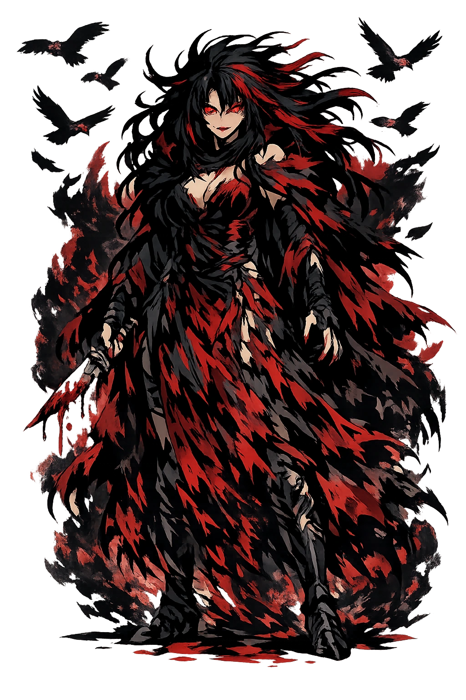
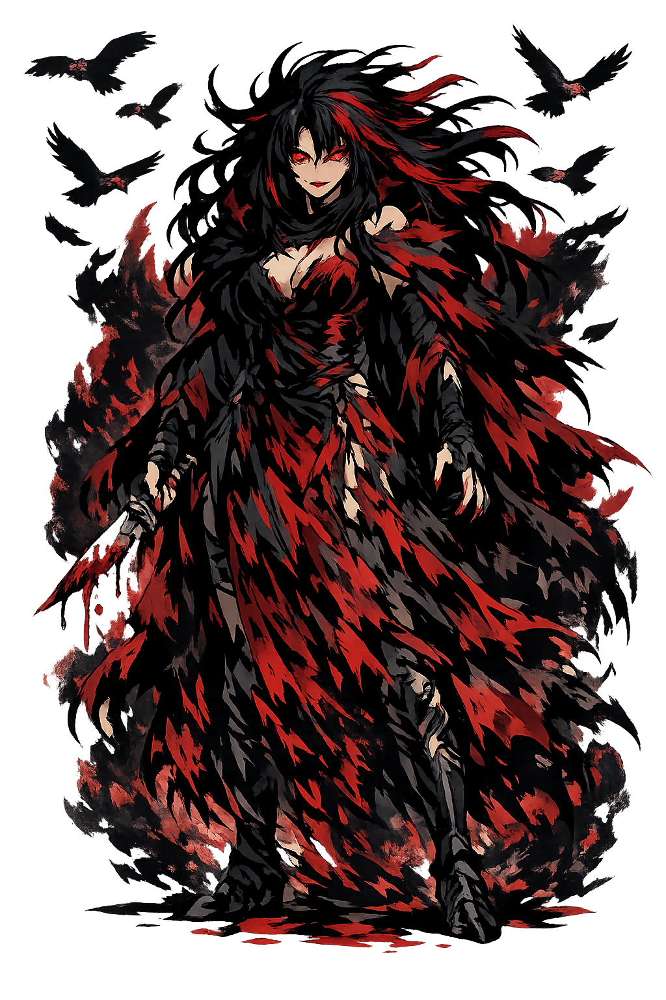

The Authentic Orthography
Violent Death, Doom, Fate · The Dark Angel · Minister of Doom

Unicode restoration and ASCII comparison
Κήρ
The name in its original Greek form. Kēr (Κήρ) is attested in the source tradition — “Doom, violent death (from κήρ)”. Its long vowels and acute accents carry the full phonetic and orthographic weight of the source tradition.
ker
Reduced to plain ker, the name loses everything that made it specific: long vowels and acute accents. What remains is an ASCII string that machines can parse but that no longer speaks with its original voice.
Kēr
The Unicode restoration recovers what ASCII flattened. Kēr restores long vowels and acute accents, returning the name to its original written dignity. The domain encodes to Punycode, but the browser displays the truth.
Kēr.com → xn--kr-wma.com
The non-ASCII characters in Kēr are encoded while the ASCII remains visible. To the DNS, it is Punycode. To humanity, it is Kēr.
How Kēr travels from ancient script to the modern URL
Greek Κήρ; from κήρ “doom, violent death"; a spirit of destruction.
Violent Death, Doom, Fate
The Unicode restoration Kēr preserves Greek stress and length; the ASCII form ker loses these features.
Owned, ideal, and ASCII forms of Kēr
Kēr
Restores Κήρ. The live temple domain — kēr.com.
ker
Flattens Κήρ. The plain ASCII fallback — what DNS and legacy systems see.
How Kēr was spoken
Doom, Battlefield Death, and the Keres
Kēr is not the underworld itself but the moment and agent of violent death. In Homer, the kēres swarm over battlefields, eager for blood. They are dark, winged, and insatiable — the vultures of mortality that no hero can finally escape.
She claims those who die in battle, by accident, or before their time — not peaceful old age.
The kēres fly over battlefields like carrion birds, choosing their victims.
She carries out the portion of death allotted by Moira; she is execution, not decision.
In Hesiod and later vase painting, the kēres lap blood from the wounds of the slain.
Scholars disagree about the relationship between the keres and the Moirai. Are the keres individual death-demons executing Fate's decisions, or are they independent powers of violent death? The Homeric usage suggests a swarm of personified doom, while later philosophical tradition tends to rationalize them into a single Fate.
Stories of Kēr
Kēr has no coherent biography because she is not a person but a function: the personification of the moment death happens. She appears most vividly in the Iliad.
In the Iliad, the kēres hover over combat, eager to seize the souls of the fallen. They are compared to vultures and carrion birds. In Book 18, Achilles' shield depicts a battle scene where the kēres drag corpses away, 'their clothes stained with human blood' (18.535–540). They are not judges; they are consumers. Their presence makes battle a feast.
Hesiod's Theogony (211–212) makes the kēres daughters of Nyx (Night), born without a father alongside other personified horrors: Thanatos (Death), Hypnos (Sleep), and the Moirai. They belong to the dark first generation of divine powers, older than the Olympians and answerable to no one but Night.
Because the kēres brought untimely death, Greeks sought to avert them with purification, prayers, and apotropaic rites. The 'kêres' could also mean one's personal allotment of death — 'his kêr came upon him' is a Homeric formula for dying. The word thus hovers between spirit and fate.
Archaic and Classical vase painters depicted the kēres as small winged female figures, often with talons, hovering near dying warriors. They are the ancestors of later European images of death-demons and possibly of the angel of death. Their visual tradition makes abstract mortality visible as a swarm.
Kēr is death without dignity. She does not guide; she grabs. She does not judge; she feeds. In the Iliad, she is one of many, a swarm, which makes battlefield death feel less like a personal event and more like a natural disaster.
Enter Extended Lore